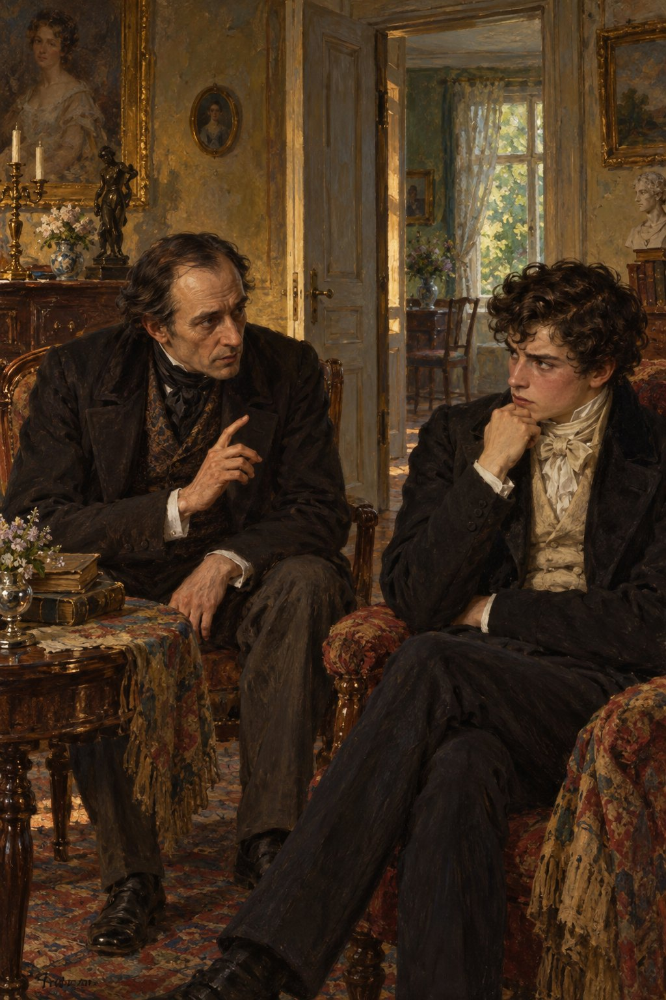

Ivan Turgenev · First Love
제10장
진짜 괴로움은
그 순간부터 시작됐다.
나는 머리를 쥐어짜며
생각하고 또 생각했다.
되도록 티를 내지 않으면서
지나이다를 끈질기게 지켜보았다.
그녀가 달라진 것은
분명했다.
혼자 산책을 나가
오래 돌아오지 않았다.
손님들 앞에 나타나지 않고
자기 방에 몇 시간씩
앉아 있는 때도 있었다.
전에는 그러지 않았다.
나는 갑자기
모든 것을 꿰뚫어 보는 사람이
된 것 같았다.
적어도 그렇게 여겼다.
‘그 사람일까?
아니면 저 사람일까?’
마음속으로
그녀의 구혼자들을
하나씩 떠올렸다.
지나이다에게 미안할 만큼
말렙스키 백작이
가장 위험하게 느껴졌다.
하지만 내 관찰력은
코앞도 제대로 보지 못했다.
숨기려는 태도 역시
남을 속이지 못했을 것이다.
적어도 루신은
금세 나를 알아챘다.
그도 요즘 달라졌다.
몸이 말랐고,
여전히 자주 웃었지만
웃음이 더 탁하고
짧고 사나워졌다.
이전의 가벼운 빈정거림과
꾸며 낸 냉소는
저도 모르게 드러나는
예민한 짜증으로 바뀌었다.
어느 날
루신과 단둘이
자세킨네 응접실에 남았다.
지나이다는 산책에서
아직 돌아오지 않았다.
다락방에서는
하녀를 꾸짖는
공작부인의 높은 목소리가
들려왔다.
“젊은 양반은
왜 줄곧 이 집에 옵니까?”
루신이 물었다.
“젊을 때는
공부도 하고 일을 해야지요.
대체 뭘 하고 있습니까?”
“제가 집에서 공부하는지
선생님이 어떻게 아십니까?”
나는 거만한 척 대답했지만
당황한 마음도 있었다.
“무슨 공부를 합니까.
마음이 다른 데 가 있잖아요.
그 나이에는 그럴 수 있지요.
하지만 상대를
영 잘못 골랐습니다.
이 집이 어떤 곳인지
안 보입니까?”
“무슨 말씀인지 모르겠습니다.”
“모른다고요?
그럼 더 나쁘지요.
알려 줄 의무가 있겠군요.
우리 같은 늙은 독신자는
여기에 와도 됩니다.
이미 단련돼 있어서
웬만한 일에는 꿈쩍 않지요.
하지만 당신은 아직 살갗이 여려요.
여기 공기는 몸에 해롭습니다.
병이 옮을 수도 있어요.”

“어떻게요?”
“당신은 지금 건강합니까?
평소와 같습니까?
지금 느끼는 감정이
몸에 좋습니까?”
“제가 무엇을 느낀다는 거죠?”
나는 물었다.
하지만 속으로는
의사가 옳다는 걸 알았다.
“젊은 양반도 참.”
루신이 말했다.
그 두 마디 안에
내게 모욕이 될 말을
잔뜩 담은 듯한 표정이었다.
“속일 생각 마세요.
다행히 아직 마음속 일이
얼굴에 다 드러납니다.
뭐, 말해 봐야 무슨 소용이겠습니까.
나도 별난 사람이 아니라면
이 집에 안 왔겠지요.”
의사는 이를 악물었다.
“다만 놀라운 건,
그렇게 머리가 좋으면서
주위에서 일어나는 일을
왜 못 보느냐는 겁니다.”
“무슨 일이 일어나는데요?”
나는 온 신경을 모았다.
루신은 나를
비웃는 듯,
또 가엾게 여기는 듯
바라보았다.
“나도 참 쓸데없는 소리를….”
혼잣말하듯 중얼거렸다.
“이런 이야기를
할 필요가 없는데.”
그는 목소리를 높였다.
“어쨌든 다시 말합니다.
이 집 공기는 당신에게 해로워요.
여기가 좋다고요?
온실 안도 향기가 좋지요.
그렇다고 거기서
살 수는 없습니다.
내 말을 듣고
카이다노프 교과서나
다시 펼치세요.”
공작부인이 들어와
이가 아프다고
의사에게 하소연했다.
그 뒤 지나이다가 나타났다.
“선생님,
얘 좀 야단쳐 주세요.”
공작부인이 말했다.
“하루 종일 얼음물을 마셔요.
가슴도 약한 애가
이래도 괜찮겠어요?”
“왜 그러십니까?”
루신이 물었다.
“그러면 어떻게 되는데요?”
지나이다가 되물었다.
“감기에 걸려
죽을 수도 있지요.”
“정말요?
그러면 어때요.
죽으면 그만이지요.”
“그렇습니까?”
의사가 낮게 중얼거렸다.
공작부인은 방을 나갔다.
“그렇지요.”
지나이다가 말을 이었다.
“이렇게 사는 게
그렇게 즐겁나요?
주위를 보세요.
뭐가 좋지요?
제가 모르고,
느끼지 못한다고 생각하세요?
얼음물을 마시면 즐거워요.
단 한순간 즐거움을 위해
이런 삶을 걸 가치도 없다고
진심으로 말씀하시겠어요?
행복까지 바라는 것도 아닌데요.”
“그렇군요.”
루신이 말했다.
“변덕과 독립심.
그 두 마디가
당신을 다 말해 주네요.”
지나이다는
신경질적으로 웃었다.
“소식이 늦으셨어요,
의사 선생님.
사람을 잘못 보시네요.
이제 따라오지도 못하시고요.
안경이라도 쓰세요.
지금 제게는 변덕을 부릴
여유도 없어요.
선생님을 놀리고,
저까지 속이는 게
얼마나 재미있겠어요.”
그러다가 갑자기
내 쪽으로 몸을 돌리고
발을 굴렀다.
“볼데마르 씨,
우울한 얼굴 좀 하지 마세요.
누가 저를 가엾게 여기는 건
못 견디겠어요.”
그녀는 빠르게 나갔다.
“젊은 양반에게
이 집 공기는 해롭습니다.
해롭고말고요.”
루신이 다시 말했다.